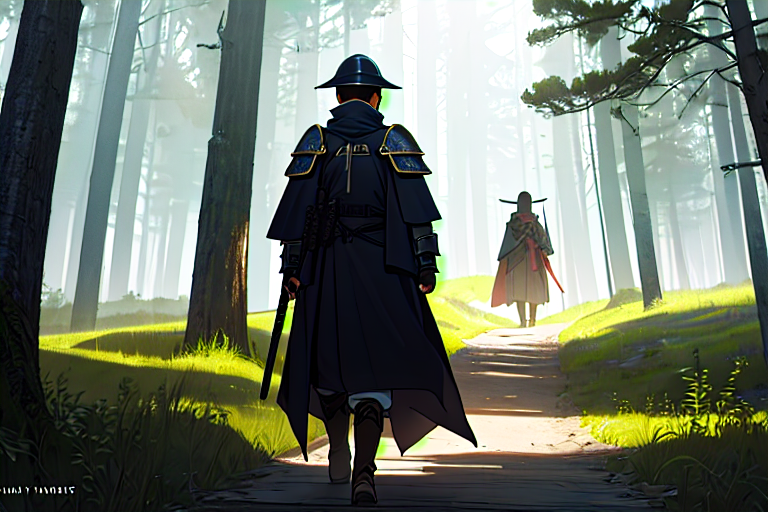
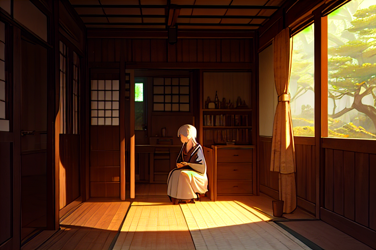
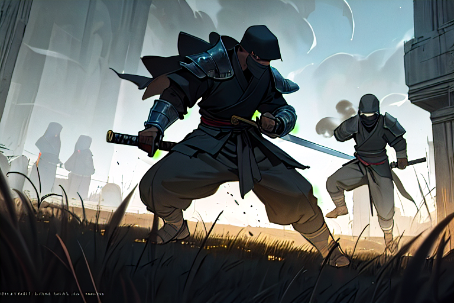

忍びの里から

朝霧が薄闇をゆっくりと溶かし、微かな光に包まれる里。木々の間から覗く青い空には鳥たちの羽音が響き渡り、草の上で露水が太陽の熱に蒸発する白煙を見つめながら、霞美鈴は静かに立ち去った。
村の入り口近くにある茶色の木門。その周りでは朝から人々が交わす言葉と動きがあいまって活気を帯びていた。里の人々もまた目を通じて見送る彼女を見つめ、声もなく手を振っていた。
「霞さん、お大事に」
美鈴は背中越しでその言葉を受け取り、振り返らないまま進む足元の石畳が小川を遠ざけていく音色と重なりあった。
「彼女のために我々も少しでも平和な世を作る」と口に出さずに呟きながら、長老たちは美鈴を見送る人々に静かだが力強い言葉を投げかける。その背中は里から遠ざかるにつれて小さくなり、ついには緑の山々と溶け合う。
木々の中へ足を踏み入れると視界が狭まり、風に乗って樹皮や苔から甘酸っぱい匂いが漂ってくる。
「美鈴さん……」
静寂の中で一人になった彼女は深呼吸をして、その息に含まれる緑豊かな里の香りを堪能した。それは後悔ではなく感謝につながった。
道端の小さな花びら一枚見逃すまいと視線が動き、足元には鋭く光る石々が揺れていた。
「旅が始まる」
その言葉は決意と共に自然に口から出てきた。
背負い込んだ弓の重量を、肩甲骨は静かにお迎えしている。小脇で握った矢立てもまた、彼女の手心と息遣いを感じ取りつつ動きが止まっている。
「平和……」
言葉の中にはまだ届かない夢だけれども、その光景から生まれる希望の雫は確かに口元を濡らしていた。
美鈴の視線は前方に向けられ、足音と共に揺れる木々。彼女が進む先へと続く風に乗って遠ざかる里人たちからの声。
「平和……」
それはただの夢ではなく、確かな希望だったからこそ、その言葉を美鈴自身も心の中で何度も繰り返していた。
薄暗い林を抜けると次第に太陽が顔を見せる。眩しい光は彼女の瞳を通じて先へ続く道を作った。
「平和……」
それがただの願望ではなく、強く胸からほとばしる意志だったため、その言葉とともに美鈴もまた自分が進むべき方向を確かに感じ取ることができた。
山々が遠ざかるにつれ、草木や花々との出会いが増えた。それらはそれぞれに故郷の里と異なりながら、同じように美鈴を迎え入れるように開いた。
「平和……」
その言葉とともに彼女もまた新たな旅を始めていく。
光が差し込む道筋から小さな川へ足を踏み込んでみると、水音は心地よく耳に響き、石の質感と手紙のような揺らぐ水面との対話が始まった。
「平和……」
その先にはどのような世界が待っているのか。それはまだ見えていないけれども、それでも彼女の中では既に一つの答えがあった。
川面を割るように進む水鳥たちの羽音と共に、美鈴は次の里へ向けて足早になっていた。
「平和……」
その繰り返しの中で彼女の表情にも少しずつ力強さと決意が刻まれていく。
隠された真実

薄暗い森の奥、木々が揺れる音と静かな雨粒があいまって聞こえる。湿った草花の香りに鼻先がかすかに刺される。霞美鈴は手ぬぐいで顔を覆いながら進む道を探していた。
「この辺りには山賊がいると聞く」と、若い旅人が雨宿り中の茶店で言った。「しかし噂だけれど」彼の声が遠くへ消え去る。美鈴はその言葉を深々と胸に刻み込んだ。
木漏れ日の中で小さな村を見つけたとき、人里離れた寂しさを感じずにはいられなかった。雨上がりの空気はまだ冷たくて湿っていた。「ここで聞き込みをするか」と思って足早に歩く。
「あなた様、何か探し物ですか？」細身の中年男が近づいてきた。
美鈴は笑顔で頭を下げた。「ただ旅人として情報を収集していただけです」
中年の男の目つきが変わった。彼は急いで話しかけてくる。
「あらためてご紹介しよう。私、この村の大黒だ」と、彼は胸を張って見せ、「あなた様は何か特別な使命をお持ちでいらっしゃるそうですね？」
美鈴はうなずく。「平和に寄与する者です」言葉の端々から虚勢を感じ取った。
「ならばと申しますが…ここには、少しばかり問題があります。この村を苦しめる秘密があるんです」と大黒が囁いた。
息苦しささえ感じさせるような緊張感の中で話は進んでいった。「それは何？」美鈴の問いに答え、「ある貴人から金銭的支援を受けている反乱軍だと聞きました」
「詳しく教えていただけますか？」
大黒が身を乗り出した。彼の言葉は、風に乗って遠くへ消えていく。「この村では人々も皆分断されてしまい」と彼は続け、「正直な話、私自身すら詳しいわけではないんです」
美鈴は深呼吸をしてから言った。「それでも情報を提供いただければ感謝します」
大黒の視線が揺れる。隠された真実への恐れと願望が交差していた。
「村はずれにある祠でしか手に入らない情報がある」と彼女に耳打ちする。「そこには秘密があり、それが戦乱を助長しているんです」
美鈴の心臓は高鳴った。平和へ一歩前進したような気がしてならなかった。
雨粒が滴るように地面から蒸発していく。霧の中でも、霞美鈴の足取りは揺るがない。
祠までの道すじで彼女に影が舞い落ちてきた。「ここで待つと良い」と言い残し、大黒の姿ももうどこにも見えなくなっていた。
遠くから聞こえてくる風切り音。それは予告ではなく警告だった。美鈴は祠へ向かう足取りを進めた。
祠に着いたときすでに夜が訪れており、月明かりの中でそこには石碑と古い木々しか存在しない。神聖な雰囲気の中、彼女は深い呼吸をしてからその場所の中心に向かった。
美鈴は祠内に入り、暗闇で光る紙切れを見つけた。「これは？」文字がぼんやりと見えてきた。
それは反乱軍への金銭的支援を示す証拠だった。彼女にとってこれが真実であり、同時に新たな旅の始まりでもあった。
美鈴は祠内で得た情報を手元にし、深い考えと共に夜空を見上げる。「まだ平和が遠い」と心の中で呟く。
しかし、その言葉には失望ではなく力強さがあった。彼女はただ、光を探すために闇を歩むことを決意したのであった。
雨粒の音が再び響き渡り、霧の中へと消えていく。祠から出る足取りもまた静かに夜空に向けて伸びていた。
それが霞美鈴の新たな旅路を告げるものだった。
同盟者との出会い

風が強く、地の底から吹き上がるように冷たく感じた。空には灰色の雲が流れ込んでいた。雪のつもりで降りそびれた雨粒が地面に当たらずに消えてしまう。そんな日だった。
道端では小さな鳥たちが木々の中を飛び交いながら餌を探していた。鋭く割れる羽音と、湿った土の匂いが混ざる中、霞美鈴は山裾にある小道を進んでいた。彼女は長い黒髪を二つに束ねていて、それが風に乗って揺れていた。
「あそこから聞こえる音が気になる」
思わず口に出して呟くと、その声もすぐに消えてしまったように感じた。前方から近づいてくる馬蹄の音と共に現れたのは、藤原勘助という名の戦士だった。彼は短い髪を刈り上げてあり、力強い目つきをしていました。
「ここに何か大切なものを置いてきたか？」
風が冷たく肌をなぞる度に、二人は視線でメッセージを交換した。
霞美鈴の手元には薄暗さの中で光る小さな物があった。それは祠から持ち出した証拠となる小道具だった。
勘助の馬車からは古文書や地図が飛び散っていた。「戦いに使うものじゃないよ」と彼は口を曲げ、しかし笑顔にならなかった。
美鈴はその様子を見て首肯し、静かな足音で近づいた。地面には土の粒と枯葉が混ざり合って独特な感触を作っていた。
「あなたも同じ目的を持っている」
彼女は小道具を手に取りながら言った。「平和のために必要な情報を持っていますか？」勘助は眉間にしわを入れて、美鈴を見つめ返した。彼の目には鋭い光が宿っていて、それが冷たい風と一緒に吹き抜けてきた。
「情報を共有したい」
小さな一言を吐いた後、美鈴は静かに微笑んだ。「あなたたち戦士の方々もまた、平和のために動いているんですよね？」勘助の口元には薄く笑みが浮かんでいた。彼女と対面してから初めて表情を変えた。
「もちろんだ」
二人の間にあるのは共有された視線だけであり、それ以外は何も必要なかった。
風はさらに強くなり、木々を揺らす音だけが辺りに響いてくる。それが彼らの会話を添えていたように思えた。
雪のように白い紙切れが風に乗って舞い上がり、二人が共通する目的に向かう道を指し示していた。
その瞬間から、霞美鈴と藤原勘助は互いに信頼を持つ同盟者となりました。